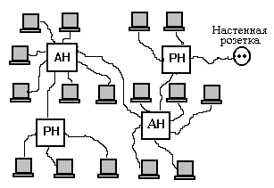
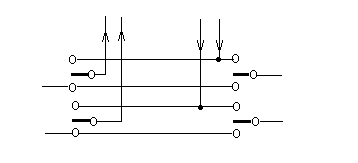
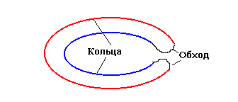

1. Методы доступа. Типичная среда передачи данных в ЛВС - отрезок (сегмент) коаксиального кабеля. К нему через аппаратуру окончания канала данных подключаются узлы - компьютеры и возможно общее периферийное оборудование. Поскольку среда передачи данных общая, а запросы на сетевые обмены у узлов появляются асинхронно, то возникает проблема разделения общей среды между многими узлами, другими словами, проблема обеспечения доступа к сети.
Доступом к сети называют взаимодействие станции (узла сети) со средой передачи данных для обмена информацией с другими станциями. Управление доступом к среде - это установление последовательности, в которой станции получают доступ к среде передачи данных.
Различают случайные и детерминированные методы доступа. Среди случайных методов наиболее известен метод множественного доступа с контролем несущей и обнаружением конфликтов (МДКН/ОК). Англоязычное название метода - Carrier Sense Multiple Access /Collision Detection (CSMA/CD). Этот метод основан на контроле несущей в линии передачи данных и устранении конфликтов, возникающих из-за попыток одновременного начала передачи двумя или более станциями, путем повторения попыток захвата линии через случайный отрезок времени.
МДКН/ОК является широковещательным (broadcasting) методом. Все станции при применении МДКН/ОК равноправны по доступу к сети. Если линия передачи данных свободна, то в ней отсутствуют электрические колебания, что легко распознается любой станцией, желающей начать передачу. Такая станция захватывает линию. Любая другая станция, желающая начать передачу в некоторый момент времени t, если обнаруживает электрические колебания в линии, то откладывает передачу до момента t + td, где td - задержка.
Различают настойчивый и ненастойчивый МДКН/ОК в зависимости от того, как определяется td. В первом случае попытка захвата канала происходит сразу после его освобождения, что допустимо при слабой загрузке сети. При заметной загрузке велика вероятность того, что несколько станций будут претендовать на доступ к сети сразу после ее освобождения, и, следовательно, конфликты станут частыми. В ненастойчивом МДКН/ОК задержка td является случайной величиной.
При работе сети каждая станция анализирует адресную часть передаваемых по сети кадров с целью обнаружения и приема кадров, предназначенных для нее.
Рис. 4.1. Алгоритмы доступа по методу МДКН/ОК
Конфликтом называется ситуация, при которой две или более станции "одновременно" пытаются захватить линию. Понятие "одновременность событий" в связи с конечностью скорости распространения сигналов по линии конкретизируется как отстояние событий во времени не более чем на величину 2*d, называемую окном столкновений, где d - время прохождения сигналов по линии между конфликтующими станциями. Если какие-либо станции начали передачу в окне столкновений, то по сети распространяются искаженные данные. Это искажение и используется для обнаружения конфликта либо сравнением в передатчике данных, передаваемых в линию (неискаженных) и получаемых из нее (искаженных), либо по появлению постоянной составляющей напряжения в линии, что обусловлено искажением используемого для представления данных манчестерского кода. Обнаружив конфликт, станция должна оповестить об этом партнера по конфликту, послав дополнительный сигнал затора, после чего станции должны отложить попытки выхода в линию на время td. Очевидно, что значения td должны быть различными для станций, участвующих в столкновении (конфликте); поэтому td- случайная величина. Ее математическое ожидание должно иметь тенденцию к росту по мере увеличения числа идущих подряд неудачных попыток захвата линии.
Среди детерминированных методов преобладают маркерные методы доступа. Маркерный метод - метод доступа к среде передачи данных в ЛВС, основанный на передаче полномочий передающей станции с помощью специального информационного объекта, называемого маркером. Под полномочием понимается право инициировать определенные действия, динамически предоставляемые объекту, например станции данных в информационной сети.
Применяется ряд разновидностей маркерных методов доступа. Например, в эстафетном методе передача маркера выполняется в порядке очередности; в способе селекторного опроса (квантированной передачи) сервер опрашивает станции и передает полномочие одной из тех станций, которые готовы к передаче. В кольцевых одноранговых сетях широко применяется тактируемый маркерный доступ, при котором маркер циркулирует по кольцу и используется станциями для передачи своих данных.
Оригинальный метод применен в высокоскоростных сетях FDDI, рассматриваемый далее.
2. Протоколы ЛВС. В ЛВС не требуется обеспечивать большинство функций, относящихся к сетевому и транспортному уровням ЭМВОС, поэтому выполняемые функции разделены между физическим и канальным уровнями, причем канальный уровень расщеплен на два подуровня: управление доступом к среде (МАС) и управление логическим каналом (LLC).
Родоначальниками большинства канальных протоколов в различных сетях стали байт-ориентированный протокол BSC и бит-ориентированный протокол HDLC. Особенно популярны разновидности HDLC. К таким протоколам можно отнести канальные протоколы XМodem для модемной связи, протоколы IEEE 802.Х, протокол LAPB для сетей Х.25 и др.
HDLC может применяться в сетях с различными многоточечными соединениями (в отличие от частного случая - XМodem), с мультиплексорами, радиоканалами и охватывает следующие варианты: 1) централизованное управление с инициацией обмена только со стороны сервера; 2) то же, но с двусторонней инициацией: 3) одноранговое управление.
Протокол HDLC устанавливает процедуру обмена командами "запрос на соединение" и "согласие на соединение", процедуру передачи данных, ликвидации соединения, типы и структуру кадров. Введены три типа кадров: информационные, для установления/разъединения соединений, супервизорные (для контроля ошибок и управления потоками).
Частные примеры протоколов: для МАС подуровня - IEEE 802/3 (доступ по МДКН/ОК, сети Ethernet) и IEEE 802/5 (маркерный доступ, сети Token Ring), для LLC подуровня - протокол IEEE 802/2.
3. Структура кадра. Кадр в стандарте IEEE 802/3, реализующем МДКН/ОК, имеет следующую структуру (ниже указаны последовательности полей кадра, их назначение, в скобках даны размеры полей в байтах):
< Преамбула (7) - ограничитель (1) - адрес назначения (2 или 6) - адрес источника (2 или 6) - длина кадра (2) - данные (от 512 до 12144 бит, т.е. от 64 до 1518 байт) - заполнение - контрольный код (4) >.
Структура кадра в стандарте IEEE 802/4, реализующем эстафетный метод доступа в сетях шинной или звездной структуры:
< Преамбула (>=1) - ограничитель (1) - управление (1) - адрес назначения (2 или 6) - адрес источника (2 или 6) - данные (>=0) - контрольный код (4) - ограничитель (1) >.
Кадр в стандарте IEEE 802.5, реализующем маркерный метод доступа в кольцевых ЛВС:
< Ограничитель (1) - управление доступом (1) - адрес назначения (6) - адрес источника (6) - данные (>=0) - контрольный код (4) - ограничитель (1) - состояние кадра (1) >.
Преамбула и начальный разделитель служат для установления синхронизации и отождествления начала кадра. Разделители представляют собой уникальную последовательность битов, обычно это код 01111110. Чтобы эта последовательность была уникальной, в основных полях осуществляется стаффинг - добавление нуля после каждой последовательности из пяти подряд идущих единиц. На приемном конце такой нуль удаляется. Длина кадра указывается в случае, если длина поля непостоянна. Поле "управление" используется для указания порядкового номера кадра, смысла команд, содержащихся в кадре, и т.п. Так, в IEEE 802/5 это поле включает указание приоритета (три бита), Т - бит маркера, М - мониторный бит и три бита резервирования. Если Т=0, то кадр воспринимается как маркер, если Т =1, то кадр является информационным (т.е. маркер занят - поле "данные" заполнено). Шестибайтовый адрес - уникальный номер сетевой платы, он назначается изготовителем по выданной ему лицензии на определенный диапазон адресов. Поле "состояние кадра" используется для отметки того, что принимающая станция опознала свой адрес и восприняла данные.
4. Аппаратные средства ЛВС. В список сетевого оборудования ЛВС входят моноканалы (другие названия - сегменты, стволы), представляющие собой физические линии передачи данных; сетевые контроллеры (адаптеры, сетевые карты), управляющие доступом к каналу связи; приемопередатчики, служащие для связи сетевого контроллера с моноканалом; блоки взаимодействия данной сети (или подсети) с другими сетями (подсетями); терминаторы - устройства согласования сопротивлений на концах моноканалов для исключения искажающих отражений сигналов; концентраторы (Hubs) - коммутирующие устройства в сетях звездной архитектуры; концентраторы оконечных систем - для подключения нескольких ООД; коннекторы - для механического и непосредственного электрического подключения узлов к кабелю.
В качестве линий передачи данных в ЛВС используют коаксиальный кабель, витую (скрученную) пару проводов, волоконно-оптический кабель. Длины используемых отрезков коаксиального кабеля не должны превышать нескольких сотен метров, а у витой пары проводов - десятков метров. При больших расстояниях в среду передачи данных включают формирователи сигналов - повторители для сопряжения отрезков. Волоконно-оптический кабель позволяет существенно увеличить расстояния и скорость передачи данных.
Рассмотрим примеры построения приемопередатчиков и сетевых контроллеров ЛВС.
- приемник сигналов от линии передачи данных; его назначение - усиление информационных сигналов и обнаружение конфликтов путем выделения постоянной составляющей искаженных сигналов и ее сопоставления в компараторе с эталонным напряжением;
- передатчик от станции в линию; обычно реализуется в виде токового переключателя или балансной схемы на насыщенных транзисторах с трансформаторным выходом;
- ответвитель для подсоединения входов приемника и выходов передатчика к кабелю; применяется механическое контактирующее устройство, накладываемое на кабель и имеющее винт-иглу, которой прокалывается оплетка кабеля и осуществляется контакт с центральным проводником; игольчатый контакт имеет трансформаторную связь с приемником и передатчиком сигналов;
- защита от шума для отключения ООД от кабеля, если ООД ошибочно генерирует сигналы дольше, чем это предусмотрено.
В кольцевых локальных сетях сигналы циркулируют по кольцу, состоящему из ряда отрезков линии связи, соединяющих пары соседних узлов. Эти отрезки соединяются в узлах через посредство повторителей сигналов, выполняющих функции приема и передачи сигналов как из кольца и в кольцо, так и между АКД и линией. Повторители вносят некоторую задержку в передачу сигналов, поэтому общая задержка зависит от числа станций, включенных в кольцо.
Одним из способов взаимосвязи линии и АКД является способ вставки регистра. Станция, получившая полномочия, называется активной станцией. Активная станция осуществляет вставку регистра в разрыв кольца и подключает передающий регистр, из которого в кольцо посылается передаваемый кадр.
Эти регистры являются сдвигающими. Кадр проходит через кольцо и возвращается на вставленный регистр. По пути его адресная часть проверяется остальными станциями, поскольку в них предусмотрена расшифровка адресной и управляющей информации. Если пакет предназначен данной станции, то принимается информационная часть пакета, проверяется правильность приема и при положительном результате проверки в кольцо направляется соответствующее подтверждение. Передающая (активная) станция одновременно с передачей сформированного в ней пакета принимает пакет, прошедший по кольцу, на вставленный регистр. В каждом такте сдвига в кольцо направляется очередной бит данных, а из кольца с некоторой задержкой возвращаются переданные биты. Если подтверждена правильность передачи, то переданные данные стираются в передающей станции, которая направляет в кольцо свободный маркер, если не подтверждена, то осуществляется повторная передача пакета.
Станции, готовые к передаче собственных данных, ждут прихода свободного маркера. Станция, получившая полномочия, вставляет свой регистр в кольцо, становясь активной, а вставленный ранее регистр исключается из кольца.
Приемопередатчик (повторитель) для волоконно-оптических линий передачи данных (световодов) также включает части приемную, передающую, чтения и записи данных. В приемной части имеются фотодиод, усилитель-формирователь сигналов с требуемыми уровнями напряжения, механическое контактирующее устройство для надежного контакта фотодиода со стеклянной оболочкой кабеля. Передатчик представлен светодиодом или микролазером.
Сетевой контроллер (адаптер) - устройство для связи ООД со средой передачи данных. Блок доступа к каналу называется также средством уровня МАС и реализует принятый метод доступа. Так, в случае метода МДКН/ОК в блоке реализуются действия по выработке сигнала затора, задержке в передаче при наличии конфликта или при занятом моноканале, формированию данных в кадры, кодированию (декодированию) электрических сигналов в (из) манчестерский код, распознаванию адреса в передаваемых по сети сообщениях, .
Формирование собственных информационных кадров включает операции по разделению сообщения на кадры и добавлению к информационным байтам служебной информации в соответствии с используемым протоколом. Обычно в служебную информацию входят адрес получателя (возможно также и отправителя), контрольный код для проверки правильности передачи, флаги - признаки начала и конца кадра. После образования информационного кадра станция должна получить полномочия. Для этого она прослушивает канал в ожидании маркера. После получения полномочий происходит преобразование параллельного кода в последовательный, преобразование в манчестерский код и передача сигналов в кабель.
В случае кольцевых маркерных ЛВС к функциям МАС-подуровня относятся: опознание адреса; генерация контрольного кода при передаче и его проверка при приеме; опознание маркера; контроль предельного времени отсутствия маркера, что требуется для принятия заключения о потере маркера и, следовательно, о его восстановлении; распаковка кадра и т.п.
5. Корпоративные сети. Корпоративная сеть обслуживает одно крупное предприятие и называется также сетью масштаба предприятия. Структура корпоративной сети выглядит следующим образом: имеется ряд подсетей, представляющих собой ЛВС типа Ethernet или Token Ring и обслуживающих каждая отдельное подразделение, расположенное в одной или нескольких близкорасположенных комнатах; подсети связаны между собой с помощью серверов доступа; обычно имеется выход во внешнюю территориальную сеть. В качестве серверов доступа могут использоваться мосты, коммутаторы, маршрутизаторы, шлюзы.
6. Сети Ethernet. Одной из первых среди ЛВС шинной структуры была создана сеть Ethernet, разработанная фирмой Xerox. В этой сети был применен метод доступа МДКН/ОК. Позднее Ethernet стала основой стандарта IEEE 802/3. Другой вариант шинных ЛВС соответствует стандарту IEEE 802/4, описывающему сеть с эстафетной передачей маркера.
Технология Ethernet наиболее распространена в ЛВС. Так, по данным на 1996 г. 85% всех компьютеров в ЛВС были в сетях Ethernet.
На базе проекта сети Ethernet разрабатывается оборудование для ЛВС рядом фирм. В настоящее время унифицировано несколько вариантов сети Ethernet, различающихся топологией и особенностями физической среды передачи данных.
1. Вариант Thick Ethernet (шина "с толстым" кабелем); принятое обозначение варианта 10Base-5, где первый элемент "10" характеризует скорость передачи данных по линии 10 Мбит/с, последний элемент "5" - максимальную длину сегмента (в сотнях метров), т.е. 500 м; другие параметры: максимальное число сегментов 5; максимальное число узлов на одном сегменте 100; минимальное расстояние между узлами 2,5 м. Здесь под сегментом кабеля понимается часть кабеля, используемая в качестве линии передачи данных и имеющая на концах согласующие элементы (терминаторы) для предотвращения отражения сигналов.
2. Вариант Thin Ethernet (шина "с тонким" кабелем, cheapernet); принятое обозначение 10Base-2: максимальное число сегментов 5; максимальная длина сегмента 185 м; максимальное число узлов на одном сегменте 30; минимальное расстояние между узлами 0,5 м; скорость передачи данных по линии 10 Мбит/с.

4. Вариант Fiber Optic Ethernet (шина на основе оптоволоконного кабеля), обозначение 10Base-F; применяется для соединений "точка-точка", например, для соединения двух конкретных распределителей в кабельной сети. Максимальные длины - в пределах 2...4 км. Цена приблизительно такая же, как и медного кабеля, но меньше габариты и масса, полная гальваническая развязка.
5. Вариант RadioEthernet (стандарт IEEE 802.11). Среда передачи данных - радиоволны, распространяющиеся в эфире. Структура сети может быть "постоянной" при наличии базовой кабельной сети с точками доступа от узлов по радиоканалам или "временной", когда обмены между узлами происходят только по радиоканалам, Применяется модифицированный метод МДКН/ОК, в котором вместо обнаружения конфликтов используется предотвращение конфликтов. Выполняется это тем, что узел, запрашивающий связь, посылает в эфир специальный кадр запроса, а передачу информации он может начать только после истечения межкадрового промежутка времени Т, если за время Т после запроса в эфире не было других запросов. Иначе попытка передачи откладывается на случайное время. Любой узел может посылать кадр запроса, только если за время Т перед этим в эфире не было других кадров запроса.
Предусмотрена посылка положительной квитанции от приемного узла, подтверждающая правильность приема кадра. Квитанция посылается с малой задержкой t после окончания приема. В этом интервале длительностью t конфликты невозможны, так как претенденты на передачу могут посылать кадры запроса только, если перед посылкой эфир свободен в течение интервала времени не менее Т (это условие выполняется и для узлов с отложенной из-за конфликта передачей), а t<T.
6. Высокоскоростные разновидности Ethernet (рассматриваются ниже).
7. Сеть Token Ring. Из кольцевых ЛВС наиболее распространены сети с передачей маркера по кольцу и среди них: 1) ЛВС типа Token Ring (сеть с таким названием была разработана фирмой IBM и послужила основой для стандарта IEEE 802 /5); 2) сети FDDI (Fiber Distributed Data Interface) на основе ВОЛС.
Топология сети Token Ring показана на рис. 4.4,а. Концентраторы служат для удобства управления сетью, в частности, отключения от кольца неисправных узлов. Рис. 4.4,б показывает схему подключения узлов к кольцу в концентраторах. Для отключения узла достаточно левые переключатели рис. 4.4,б поставить в верхнее, а правые переключатели - в нижнее положение (в нормальном режиме положение переключателей противоположное)..
Типичная реализация сети Token Ring характеризуется следующими данными: максимальное число станций 96; максимальное число концентраторов 12; максимальная длина замыкающего кабеля 120 м; максимальная длина кабеля между двумя концентраторами или между концентратором и станцией 45 м; два варианта скорости передачи данных по линии 4 или 16 Мбит/с.
б)

Рис. 4.4. Схема сети Token Ring
<ограничитель-Р-Т-М-R-ограничитель>.
Если Т = 0, то маркер свободен. Тогда если он проходит мимо станции, имеющей данные для передачи, и приоритет станции не ниже значения, записанного в Р, то станция преобразует маркер в информационный кадр: устанавливает Т = 1 и записывает между R и конечным ограничителем адрес получателя, данные и другие сведения в соответствии с принятой структурой кадра. Информационный кадр проходит по кольцу, при этом: 1) каждая станция, готовая к передаче, записывает значение своего приоритета в R, если ее приоритет выше уже записанного в R значения; 2) станция-получатель, распознав свой адрес, считывает данные и отмечает в конце кадра (в бите "статус кадра") факт приема данных.
Совершив полный оборот по кольцу, кадр приходит к станции-отправителю, которая анализирует состояние кадра. Если передача не произошла, то делается повторная попытка передачи. Если произошла, то кадр преобразуется в маркер указанной выше структуры с Т = 0. При этом также происходят действия:
Р := R; R := 0;
где Р и R - трехбитовые коды.
При следующем обороте маркер будет захвачен той станцией-претендентом, у которой на предыдущем обороте оказался наивысший приоритет (именно его значение записано в P).
Сеть Token Ring рассчитана на меньшие предельные расстояния и число станций, чем Ethernet, но лучше приспособлена к повышенным нагрузкам.
8. Сеть Arcnet. Это сеть звездной топологии, с эстафетной передачей полномочий, пакеты могут включать до 516 байт, скорость 2,5 Мбит/с, максимальное число узлов 255. Несмотря на надежность и удобство инсталляции и эксплуатации, сеть применяется все реже из-за малого размера адреса (недостаточной для современных систем распределенных вычислений) и сравнительно невысокой скорости (передача полномочий происходит только после того, как закончена передача пакета по установленному соединению).
9. Сеть FDDI. Скорость 10 Мбит/с недостаточна для многих современных применений сетей. Поэтому разрабатываются технологии и конкретные реализации высокоскоростных ЛВС.
FDDI (Fiber Distributed Data Interface) - ЛВС кольцевой структуры, использующая ВОЛС и специфический вариант маркерного метода доступа.
В основном варианте сети применено двойное кольцо на ВОЛС. Обеспечивается информационная скорость 100 Мбит/с. Расстояние между крайними узлами до 200 км, между соседними станциями - не более 2 км. Максимальное число узлов 500. В ВОЛС используются волны длиной 1300 нм.
Два кольца ВОЛС используются одновременно. Станции можно подключать к одному из колец или к обоим сразу. Использование конкретным узлом обоих колец позволяет для этого узла иметь суммарную пропускную способность в 200 Мбит/с. Другое возможное использование второго кольца - обход с его помощью поврежденного участка (рис. 4.5).

Такое специальное манчестерское кодирование носит название 4b/5b. Запись 4b/5b означает код, в котором для самосинхронизации при передаче 4 бит двоичного кода используется 5 бит так, что не может быть более двух нулей подряд, или после 4 бит добавляется еще один обязательный перепад, что и используется в FDDI.
При таком коде несколько усложняются блоки кодирования и декодирования, но зато повышается скорость передачи по линии связи, так как почти вдвое уменьшается максимальная частота переключения по сравнению с манчестерским кодом.
В соответствии с методом FDDI по кольцу циркулирует пакет, состоящий из маркера и информационных кадров. Любая станция, готовая к передаче, распознав проходящий через нее пакет, вписывает свой кадр в конец пакета. Она же ликвидирует его после того, как кадр вернется к ней после оборота по кольцу и при условии, что он был воспринят получателем. Если обмен происходит без сбоев, то кадр, возвращающийся к станции-отправителю, оказывается в пакете уже первым, так как все предшествующие кадры должны быть ликвидированы раньше.
Сеть FDDI обычно используется как объединяющая в единую сеть много отдельных подсетей ЛВС. Например, при организации информационной системы крупного предприятия целесообразно иметь ЛВС типа Ethernet или Token Ring в помещениях отдельных проектных подразделений, а связь между подразделениями осуществлять через сеть FDDI.
10. Другие высокоскоростные ЛВС. В настоящее время возможен выбор между следующими вариантами высокоскоростных ЛВС.
1. Сеть FDDI; ее основное применение - опорная (магистральная) сеть, связывающая подсети отдельных подразделений предприятий. Средняя цена на один узел С составляет приблизительно 3000 долл. Ее устройство подробнее рассмотрено выше.
2. Сеть 100VG-AnyLAN (стандарт IEEE 802/12) работает на скорости 100 Мбит/с. Ее особенности :
- обработка запросов по приоритету;
- поддержка форматов кадра, принятых в Ethernet и Token Ring, физические линии - витая пара или оптоволокно;
- топология - звезда, однако возможно каскадное включение хабов;
- кабель - четыре неэкранированные пары (UTP) или две экранированные (STP). В случае четырех пар достигается четырехкратное увеличение пропускной способности при использовании частоты 25 МГц, то же и в случае двух экранированных пар, так как здесь вдвое выше допустимая частота (50 МГц);
- применяется код без возвращения к нулю (NRZ), в котором единица представляется высоким уровем напряжения, нуль - низким уровнем. Для самосинхронизации применено нечто, похожее на стаффинг - через три подряд идущие одинаковые символы включается перепад. Такая избыточность требует не более 20 % дополнительного времени, но по сравнению с манчестерским кодом при той же частоте передается вдвое больше битов;
- опрос выполняется поочередно по портам корневого хаба с учетом приоритетов (два уровня приоритета). Если к порту подключен хаб низшего уровня, то он ждет окончания опроса портов хаба высшего уровня. Если узел ждет получения полномочий более 300 мс, то его приоритет повышается.
3. Сеть Fast Ethernet, иначе называемая 100BaseX или 100Base-T (стандарт IEEE 802/30). Информационная скорость 100 Мбит/с. В Fast Ethernet применен метод доступа МДКН/ОК. Используется для построения скоростных ЛВС (последовательно включается не более двух хабов), для объединения низкоскоростных подсетей 10Base-T в единую скоростную сеть и для подключения серверов на расстояниях до 200 м. В последнем случае серверы соединяются с клиентскими узлами через шину 100 Мбит/с и коммутатор, называемый также конвертором или переключателем скорости 100/10. К конвертору с другой стороны подключено несколько шин 10 Мбит/с, на которые нагружены остальные узлы. Практически можно использовать до 250 узлов, теоретически - до 1024. Подсетями могут быть как Fast Ethernet, так и обычные Ethernet с 10 Мбит/с, включенные через преобразователь скорости. Различают варианты 100Base-TX, в котором применяют кабель из двух неэкранированных витых пар категории 5, 100Base-T4 - с четырьмя неэкранированными парами категории 5, 100Base-FX - на ВОЛС.
4. Гигабитные скорости достигнуты в 1000Base-X - варианте Gigabit Ethernet сети Ethernet. В соответствии со стандартом IEEE 802.3z имеются разновидности на ВОЛС с длиной волны 830 или 1270 нм (1000Base-SX и 1000Base-LX), расстояния до 550 м, и на витой паре категории 5 (1000BaseСХ) на расстояниях до 25 м. Скорость до 1 Гбит/с. Гигабитная скорость достигается благодаря следующим решениям.
Сеть имеет иерархическую структуру. Участки (отдельные компьютеры или подсети) по 10 Мб/с подключаются к портам переключателей (switches) скорости 10/100, их выходы по 100 Мб/с, в свою очередь, подключаютсмя к портам переключателей 100/1000. В сегментах сети, имеющих 1000 Мб/с, используются, во-первых, передача данных по ВОЛС или параллельно по 4 витым парам, во-вторых, 5-уровневое представление данных (например, +2, +1, 0, -1, -2 В), в-третьих, кодирование 8b/10b. В результате в каждой витой паре имеем 250 Мб/с при частоте сигналов 125 МГц.
6. Сети, реализующие технологию АТМ. Эта технология, поясняемая в гл. 5, может применяться как в небольших ЛВС, так и в территориальных сетях. Информационные скорости находятся в диапазоне 25...2048 Мбит/с.
11. Сети промышленной автоматизации. Поскольку аппаратные средства АСУТП могут быть территориально разнесены, то для их взаимодействия нужна специальная вычислительная сеть, называемая промышленной сетью (или Fieldbus). В число узлов сети входят компьютеры, выполняющие функции NC и SCADA. Это могут быть обычные персональные компьютеры и специализированные программируемые логические контроллеры, называемые промышленными компьютерами. Специфика ПЛК - наличие нескольких аналоговых и цифровых портов, встроенный интерпретатор специализированного языка, детерминированные задержки при обработке сигналов, требующих незамедлительного реагирования. Однако ПЛК, в отличие от IBM PC, рассчитаны на решение ограниченного круга задач в силу специализированности программного обеспечения.
В целом промышленные компьютеры имеют следующие особенности: 1) работа в режиме реального времени (для промышленных персональных компьютеров разработаны такие ОС реального времени, как OS-9, QNX, VRTX и др.); 2) конструкция, приспособленная для работы ЭВМ в цеховых условиях (повышенные вибрации, электромагнитные помехи, запыленность, перепады температур, иногда взрывоопасность); 3) возможность встраивания дополнительных блоков управляющей, регистрирующей, сопрягающей аппаратуры, что помимо специальных конструкторских решений обеспечивается использованием стандартных шин и увеличением числа плат расширения; 4) автоматический перезапуск компьютера в случае "зависания" программы; 5) повышенные требования к надежности функционирования. В значительной мере специализация промышленных компьютеров определяется программным обеспечением. Конструктивно промышленный компьютер представляет собой корзину (крейт) с несколькими гнездами (слотами) для встраиваемых плат. Возможно использование мостов между крейтами. В качестве стандартных шин в настоящее время преимущественно используются шины VME-bus (Versabus Module Europe-bus) и PCI (Peripheral Component Interconnect).
VME-bus - системная шина для создания распределенных систем управления на основе встраиваемого оборудования (процессоры, накопители, контроллеры ввода/вывода). Представляет собой расширение локальной шины компьютера на несколько гнезд объединительной платы (до 21 слота), возможно построение многомастерных систем, т.е. систем, в которых ведущими могут быть два или более устройств. Имеет 32-разрядные немультиплексируемые шины данных и адресов, возможно использование мультиплексируемой 64-разрядной шины. Пропускная способность шины 320 Мбайт/с.
PCI - более удобная шина для однопроцессорных архитектур, получает все большее распространение. Пропускная способность до 264 Мбайт/с, разрядность шины 2х32 и/или при мультиплексировании 64, архитектура с одним ведущим устройством. Имеется ряд разновидностей шины, например, шина CompactPCI, в которой унифицирован ряд геометрических и механических параметров (т.н. Евромеханика).
Программная связь с аппаратурой нижнего уровня (датчиками, исполнительными устройствами) происходит через драйверы. Межпрограммные связи реализуются через интерфейсы, подобные OLE. Для упрощения создания систем разработан стандарт OPC (OLE for Process Control).
Обычными для промышленных сетей являются предельные расстояния между узлами (датчиками, исполнительными устройствми и контроллерами) в сотни метров, размеры сообщений - до одного килобайта (в сжатой форме). Опрос датчиков периодический. Важное требование к промышленной сети - обеспечение работы в реальном масштабе времени, поэтому для АСУТП сети типа Ethernet не подходят, поскольку в них не гарантируется ограничение задержек сверху.
Пример промышленной сети - Profibus, скорость 12 Мбод, пакеты до 247 байт, расстояния до 1,5 км. Имеет выход в сеть АСУП, в качестве которой чаще всего используется сеть Ethernet. Наряду с Profibus, используют и другие протоколы, например, популярен протокол CAN. На физическом уровне в Fieldbus часто используют интерфейс RS-485 - витая пара, длина сегмента до 1,2 км, на сегменте может быть до 32 узлов